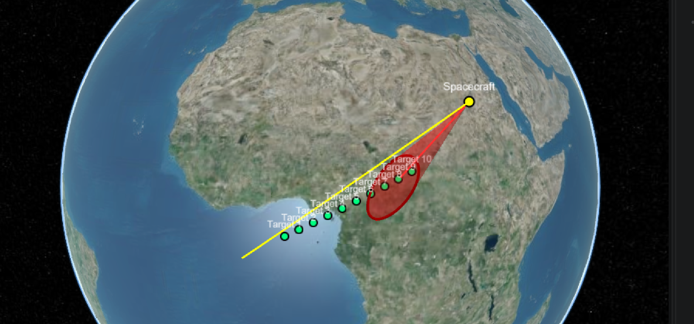

Assets & subsystems
Represent a system as assets composed of subsystems, each with its own capabilities and state.
Open-source mission scheduling & simulation
Horizon Simulation Framework (HSF) helps engineers explore feasible task schedules for complex systems—by combining schedule generation with a user-defined model of how the system behaves.
A framework for system-level questions
System requirements are difficult to evaluate before a system is built. HSF lets you describe assets, subsystems, tasks, constraints, and objectives, then simulate candidate schedules against that model.
The scheduler proposes what a system might do; the model determines what it can do. The result is a ranked set of feasible schedules to support mission design and analysis.

How it works
Propose tasks within the access windows available to each asset.
Simulate the system and test subsystem states against constraints.
Keep feasible options and evaluate them against user-defined objectives.
Designed for modular models
HSF keeps the scheduler separate from the system model, so system behavior can be defined through reusable, user-defined components.
Represent a system as assets composed of subsystems, each with its own capabilities and state.
Express limits on system states and check whether candidate tasks satisfy them.
Define how subsystems exchange information while keeping their models modular.
Compare feasible task sequences using the values and evaluation criteria you choose.
See HSF in action
Earth observation
A two-spacecraft scenario that demonstrates coordinated imaging tasks and subsystem models for spacecraft capabilities and resources.
Explore the Aeolus sample
Geospatial visualization
A companion Cesium viewer project explores how mission scenarios and simulation results can be presented in an interactive geospatial view.
Visit the Cesium Viewer projectLearn & explore
Start with a spacecraft, camera subsystem, task list, and simulation scenario.
TUTORIAL · 02See how a modeled look-angle requirement filters candidate schedules.
TUTORIAL · 03Explore dependencies as modular interfaces between subsystems.
RESEARCH & HISTORYBrowse student theses and projects that have developed or applied the framework.
Ready to try it?
HSF targets .NET 8. The repository’s example guide covers prerequisites, building the framework, and running sample scenarios.
cd src/Horizon
dotnet build
dotnet run -- -scen Aeolus_CS
Run from the repository root’s src/Horizon directory.